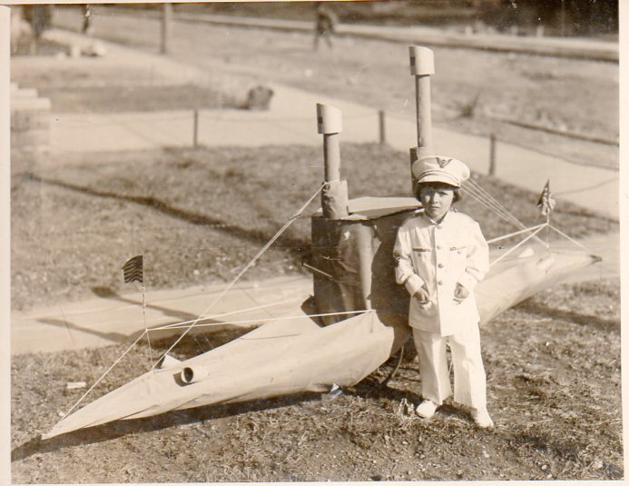

Wednesday, December the 22nd, 2010
back to: title, date or indexes
This photograph has yet to be authenticated by the Tiny Enid Photographic Authentication Bureau, but appears to show a tot who could possibly be Tiny Enid standing next to her cardboard submarine. That the plucky little fascist had a cardboard submarine we already know. Remember that stirring line in the Memoirs, “I had a submarine and it was made out of cardboard”?

Photo from the superb Ptak Science Books